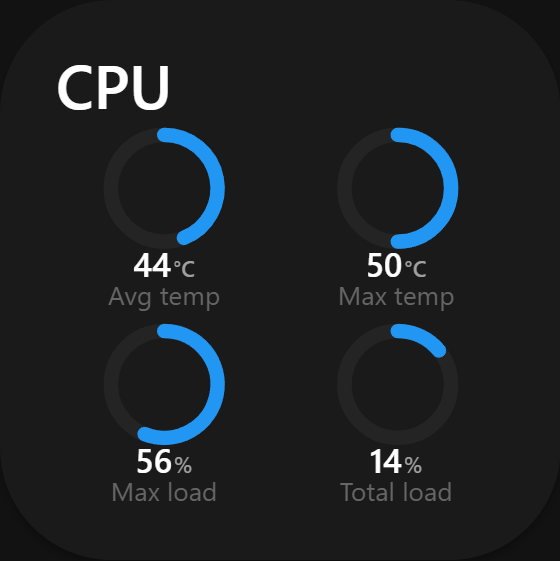
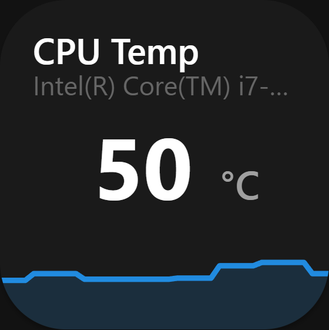
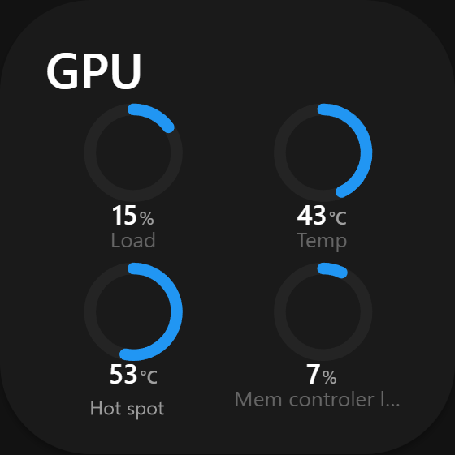
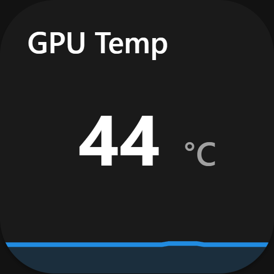

A variable carries its unit and its formatting, so a temperature reads as 61 °C and a size as 512 GB without anything to append.




Pick them from the variable browser or type the reference — a templated action field receives the reading, not the name.